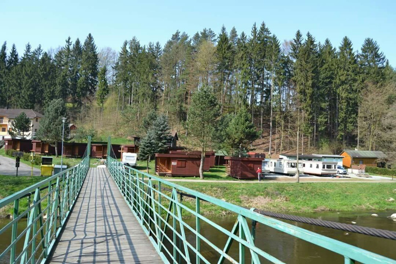
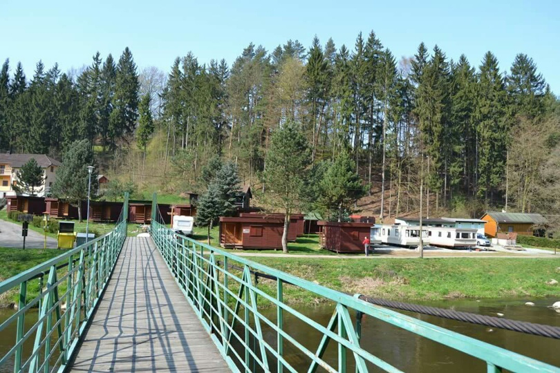

Oblast
Celá oblast je součástí přírodní rezervace Stvořidla o rozloze cca 300 ha. Nachází se mezi městy Světlá nad Sázavou a Ledeč nad Sázavou. Stvořidla jsou nejlépe přístupná vlakem po trati 212 ze zastávek Smrčná nebo Stvořidla. Po levém břehu vede červená turistická značka. Ubytování lze zajistit v tábořišti Stvořidla. Avšak projít se přírodou také stojí za to.
Fauna a flóra
Lesy v okolí jsou smrkové nebo smíšené, ze vzácných rostlin se vyskytují barvínek menší, kruštík širokolistý, kozlík dvoudomý, plavuň vidlačka, strmobýl lysý, čertkus luční, kruštík širokolistý, růže alpská, devětsil bílý, silenka červená, křivatec žlutý, prvosenka vyšší, řeřišničník Hallerův, dymnivka bobovitá, dymnivka dutá aj. Z živočišné říše se vyskytuje vydra říční, mlok skvrnitý nebo ledňáček říční.
Legendy
Podle místní legendy se měl sedlák, jehož pole nebylo úrodné, domluvit s čertem, který mu měl s prací na poli pomoci. Sedlák čertovi slíbil, že za deset let dostane jeho duši. Po deseti letech se však sedlákovi do pekla příliš nechtělo a na radu své manželky vykropil chalupu svěcenou vodou. Čert, který tak nemohl dovnitř, se rozzlobil, nabral v nedalekém lomu náruč kamení a chtěl ji naházet na sedlákovo pole. Jak letěl zpět, svítilo mu do očí slunce a oslepený čert začal kameny odhazovat dříve - místo na sedlákovo pole odházel svůj náklad do koryta Sázavy.

 
